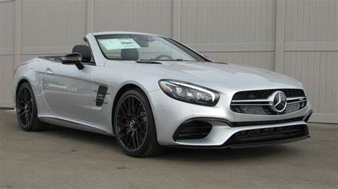

Informations generales Mercedes Clk cabriolet

sold out
description de la voiture
La Mercedes SL (Sport Leicht, qui signifie « Sport Léger » en allemand) est une ligne emblématique de voitures de sport produite par le constructeur allemand Mercedes-Benz. Le modèle SL est connu pour son design élégant, ses performances impressionnantes et son toit rétractable, qui permet de transformer la voiture en cabriolet.